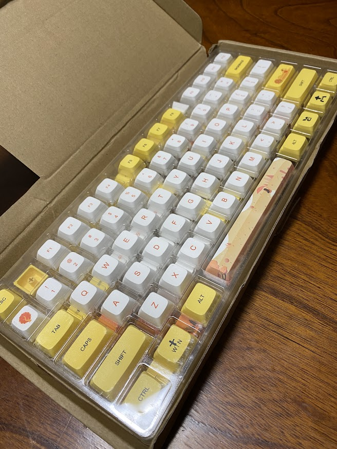
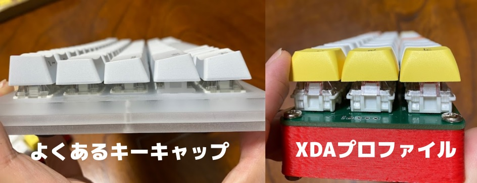
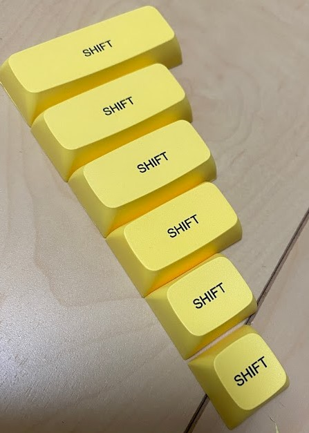
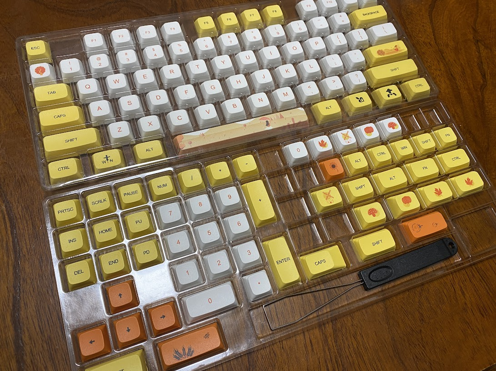
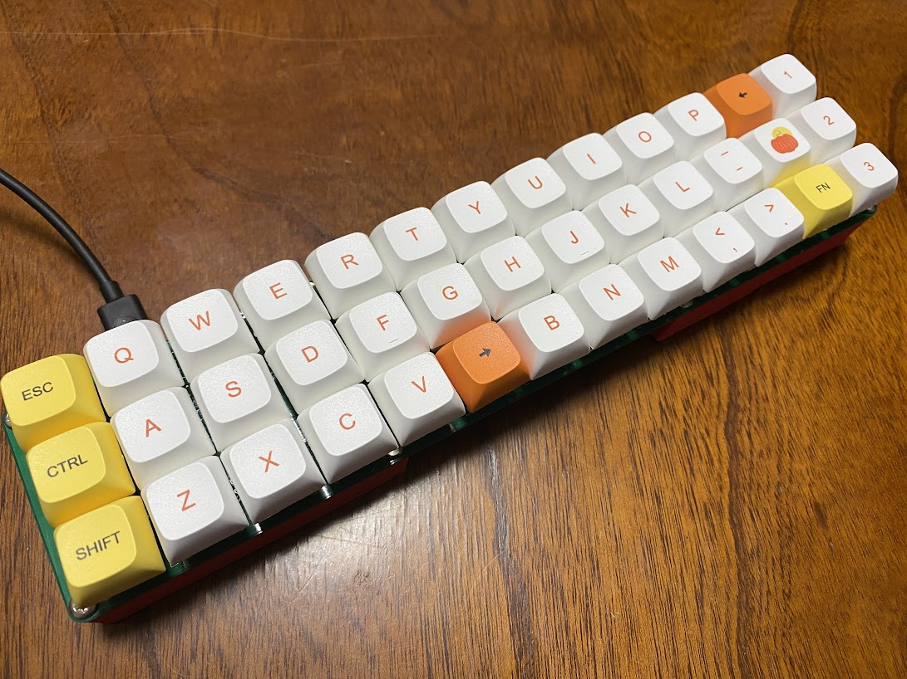

この記事はBanggoodの提供でお届けします。
以前紹介したようにこのブログはBanggoodと提携させていただいており、今回紹介する129 Keys Yellow Autumn Keycap Set XDA Profile PBT Sublimation Keycaps for Mechanical Keyboards - Yellow(以下 「129 Keys Yellow Autumn Keycap Set」)も、Banggoodからいただいたものとなります。（129 Keys Yellow Autumn Keycap Setのレビューがしたい！と言ったのは自分なので、Banggoodが無理やりこの商品を押しているわけではなく、inajobの一押しアイテム！、という感じです。）
129 Keys Yellow Autumn Keycap Set とは？
メカニカルキーボード用のキーキャップのセットです。

普通の人には縁の無いかもしれませんが、この商品は「自作キーボード」を楽しむ人のためのものです。
「自作キーボード」というのは、文字通りパソコン用のキーボードを自作したもの、ということです。
キーボードの自作というのは、基板を設計し、マイコン、ダイオード、キーボードスイッチ、キーキャップ、などを個別に購入して、自分の思い通りのキーボードを作ることで、私も最近1つキーボードを自作しました。
今回レビューする商品はそんな「自作キーボード」のためのキーキャップです。
キーキャップなんて、色が違うくらいでどれも同じでしょ？と思うかもしれませんが、見た目以外にも実はいろいろな規格があるのです。
キーボードスイッチの形
キーキャップはキーボードスイッチと組み合わせて使いますが、このときキーボードスイッチのスイッチ部分の形と、キーキャップ部分の形がかみ合っていないと、取り付けることが出来ません。
キーキャップを買う際は、まずここをチェックする必要がありますが、ほとんどの自作キーボードのキーボードスイッチは「Cherry MX」と呼ばれるキーボードスイッチと互換の形状をしているため、個々の互換性が問題になる事はあまりありません。 （最近ロープロファイルと呼ばれる薄型のキーボードスイッチが出てきており、その場合はキーキャップも専用のものが必要です）
この商品もCherry MXキーボードスイッチ互換のキーキャップです。
キーボードキャップのプロファイル
次にキーキャップのプロファイルです。これはキーキャップの大まかな形状のことです。 実は、キーキャップには様々な形状があり、例えばデスクトップPCを買ったら付いてくるようなキーボードの場合は、列によってその高さが異なるOEMプロファイルと、呼ばれる形状です。
自作キーボードの場合は自作する人が好きにキー配列を定義するので、OEMプロファイルのように列によってキーの高さが異なるキーキャップだとうまく利用できない場合があります。
列によってキーキャップの形が変化しないプロファイルとしては DSAプロファイルや、XDAプロファイルがあります。自作キーボード用のキーキャップとしては、これらのプロファイルを使うことが多いようです。

この商品はXDAプロファイルです。
キーキャップのサイズ
今手元のキーボードを見てもらうと、「A」や「1」といったきーは正方形に近い形をしており、「Shift」や「Ctrl」は横長の長方形、「Enter」に至っては四角形を2つつなげたような不思議な形状をいしていることに気づくでしょう。
このようにキーボードのいくつかのキーはサイズがほかのものと違います。 自作キーボードを作る際は、これらのキーキャップをどのサイズにするかも、自作する人が決めます。
そのため、キーキャップを用意する際は、しかるべきキーが期待する大きさのものを選ぶ必要があります。
この商品は様々なサイズのキーが用意してあり、例えばShiftキーであれば2.5U(多分), 2.25U（多分）, 2U, 1.75U, 1.25U, 1Uと6つのサイズが入っています。

またイラストの付いた、なんでも使えそうなキーキャップもたくさん付属しており、特殊なマクロキーや、足りないキーの代わりに使うこともできます。

その他
キーに刻印されている記号は英字配列のものです、個人的には日本語配列のものが好きなのですが、海外で出回っているキーキャップで日本語配列の物はないのでそこは仕方がないです。
キーキャップへの印字は昇華印刷です。長く使っているとすり減りが気になるようですが、普通に使う分には問題ないと思います。
使ってみた
私が自作した39%キーボードに取り付けてみました。

このキーボードはすべてのキーが同じサイズ(1U)なので、各種機能キーも1Uサイズのものが必要です。足りないキーはイラストの刻印のキーを使いましたが、それっぽく仕上げることが出来ました。
まとめ
XDAプロファイルで、様々なサイズの機能キーが同梱されており、自作キーボードで試行錯誤する人にぴったりの商品だと感じました。ひとまず家に一式あると、安心して自作キーボードの試作が出来そうです。
クーポンコード
さて、ここまで紹介してきた129 Keys Yellow Autumn Keycap Setですが、今回Banggoodの提供という事で、$49.99 → $37.99で購入できるクーポンを頂いています。
コード： BG06f97e (10/31まで)
129 Keys Yellow Autumn Keycap Setをカートに入れ、チェックアウト後にこのクーポンコードを入力することで割引を受けることが出来ます。
有効期限は2021/10/31なので、買いたい方はお早めにどうぞ！（加えて、在庫に限りがあると思うのでお早目に！）


関連記事